Configuring Authentication using GitHub
The authentication system in RHDH is handled by Authentication Providers. RHDH uses the providers to access identity and user information, which can be used to delegate access rights to various plugins and services in RHDH. You can configure RHDH to have multiple authentication providers, with only ONE provider being actively used at any given time for logging in users.
RHDH supports many common authentication providers by default like GitHub, GitLab, Auth0, Okta, and more. Consult the references section at the bottom of this page for the full list.
| Authentication providers are responsible only for authenticating the identity of the user, and passing on this information to RHDH. Authorization, that is, what actions an authenticated identity can perform in RHDH are handled by a different component of RHDH called Role Based Access Control (RBAC) using Permission Policies. RBAC is covered in a separate section of this course. |
Consider the scenario where your organization’s developers use GitHub to manage source code. You would ideally like developers to use their GitHub credentials to log in to RHDH, and also import team and user information from GitHub. Very often, developers are added to a GitHub Organization to manage groups of developers. The following exercise configures RHDH to use GitHub for authentication, and imports the GitHub organization member and team details into the RHDH database.
RHDH also ingtegrates with GitHub to offer various other features. There are separate plugins to interact with GitHub repositories and visualize issues, releases, deployments and other GitHub features. You can also fetch and synchronize team information from GitHub Organizations and visualize them as Groups and Users in RHDH.
Lab: Configuring Integration and Authentication with GitHub
Pre-requisites
-
A GitHub account
-
Administrator rights to a GitHub Organization (Create a new Github Org if it does not exist)
-
Create one or more teams within your GitHub Organization
-
Invite one or more users to your GitHub Organization
-
-
OpenShift cluster administrator access
-
Ability to create
GitHub Appson GitHub
Configuring GitHub for RHDH authentication involves two major steps:
-
Create a new GitHub App for your GitHub organization
-
Edit the
app-config-rhdhConfigMap and configure RHDH to use the GitHub App for authentication. To prevent storing credentials in plain text in the ConfigMap, you will embed the credentials for GitHub in a secret, and then refer the secret keys in theapp-config-rhdhConfigMap.
Create a new GitHub App
-
Navigate to https://github.com/organizations/<YOUR_ORGANIZATION>/settings/apps, and then click
New GitHub App.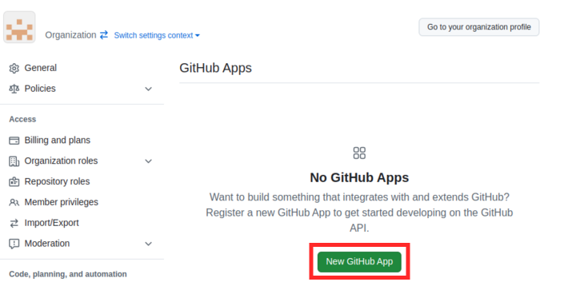Figure 1. New GitHub App -
In the
Register new GitHub Apppage, fill out the following details:-
GitHub App name: rhdh-app-<your_RHDP_GUID> (A unique name)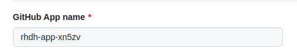Figure 2. GitHub App name -
Homepage URL: https://backstage-rhdh-devhub.apps.cluster-<GUID>.dynamic.redhatworkshops.io (Your RHDH Route URL)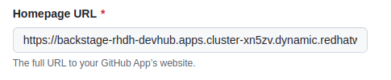Figure 3. Homepage URL -
Callback URL: https://backstage-rhdh-devhub.apps.cluster-<GUID>.dynamic.redhatworkshops.io/api/auth/github/handler/frame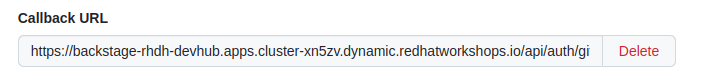Figure 4. Callback URL -
Webhook URL: https://backstage-rhdh-devhub.apps.cluster-<GUID>.dynamic.redhatworkshops.io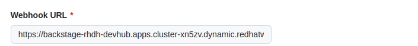Figure 5. Webhook URL -
Webhook secret: 5up3rS3cret (Provide a strong secret)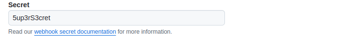Figure 6. Webhook secret -
Under
Permissions, expandRepository Permissionsand ensure that you provide appropriate access (Read-Only, Read and Write etc) to the GitHub features you would like to integrate from RHDH. At a minimum, toggle the following permissions.Read-onlypermissions should be enough. ToggleRead and writepermissions only if you are sure you will make changes via the GitHub API:-
Administration
-
Commit statuses
-
Contents
-
Dependabot alerts
-
Deployments
-
Pull Requests
-
Webhooks
-
-
Toggle other permissions as per your needs.
-
Under
Organization permissions, ensure that you toggleRead-onlypermissions forMembersso that RHDH can import team and user information from GitHub. -
Select
Only on this accountfor theWhere can this GitHub App be installed?option.Figure 7. Only on this account
-
-
Verify your form entries, and when you are satisfied click
Create GitHub App. -
You will be shown your
App IDand a client ID. Make note of these values for the next step. -
Click
Generate a new client secret. Copy the generated secret for the next steps.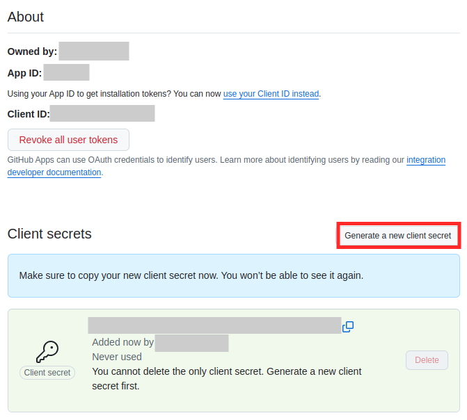Figure 8. Generate Client Secret -
Scroll down to the
Private Keyssection and clickGenerate a private key. The private key will be downloaded. Copy the generated private key certificate (it is in PEM format) to a safe location.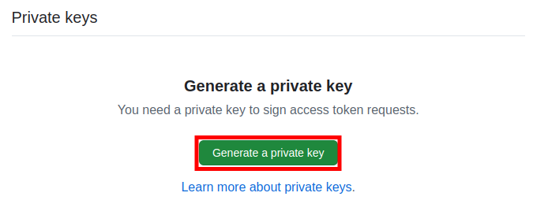Figure 9. Generate a private key -
In the left sidebar menu of the generated app, select
Install App, and then clickInstall.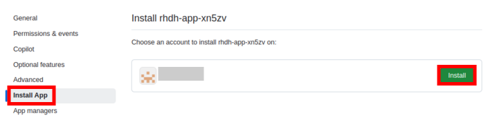Figure 10. Click Install -
Once the installation is complete, you shall get a prompt as shown below.
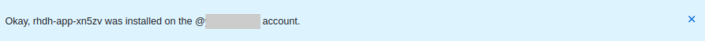Figure 11. Installation Complete
Create a Secret to Store GitHub App Credentials
Rather than storing the GitHub App credentials in plain text directly in the app-config-rhdh ConfigMap, you will create a secret to store the credentials. You will then refer to the credentials as environment variables in the ConfigMap.
-
. Log in to the OpenShift cluster as the
adminuser using theocCLI. Switch to thedevhubnamespace where you installed RHDH.oc login --token=XXXXX --server=https://api.cluster-<guid>.dynamic.redhatworkshops.io:6443 The server uses a certificate signed by an unknown authority. You can bypass the certificate check, but any data you send to the server could be intercepted by others. Use insecure connections? (y/n): y Logged into "https://api.cluster-<guid>.dynamic.redhatworkshops.io:6443" as "admin" using the token provided. You have access to 75 projects, the list has been suppressed. You can list all projects with 'oc projects' Using project "devhub".
-
Create a file named
env.shwith the following environment variables and replace the values with the GitHub App details you created in the previous step. Replace theGITHUB_APP_PRIVATE_KEY_FILEwith your private key file that you downloaded from GitHub. Changeguidto your unique RHDP GUID.$ cat env.sh export OPENSHIFT_CLUSTER_INFO=$(oc cluster-info | head -n 1 | sed 's/^.https...api//' | sed 's/.6443.$//') export K8S_CLUSTER_API=$(oc cluster-info | head -n 1 | sed 's/^.*https/https/') export GITHUB_HOST_DOMAIN=https://github.com export GITHUB_ORGANIZATION='<Your Org Name>' export GITHUB_ORG_URL=$GITHUB_HOST_DOMAIN/$GITHUB_ORGANIZATION export GITHUB_APP_ID='Your App ID' export GITHUB_APP_CLIENT_ID='Your client ID' export GITHUB_APP_CLIENT_SECRET='Your client secret' export GITHUB_APP_PRIVATE_KEY_FILE='rhdh-app-<guid>.2024-01-17.private-key.pem' export GITHUB_APP_WEBHOOK_URL='https://rhdh-developer-hub-devhub.apps.cluster-<guid>.dynamic.redhatworkshops.io' export GITHUB_APP_WEBHOOK_SECRET='Your webhook secret'
-
Source the
env.shfile to export the environment variables:$ source env.sh
-
You created a secret named
rhdh-secretsto store the backend API token after installation. You need to add more keys to this secret. Execute the following command to add keys related to GitHub authentication:$ oc set data secret/rhdh-secrets -n devhub \ GITHUB_HOST_DOMAIN=$GITHUB_HOST_DOMAIN \ GITHUB_ORGANIZATION=$GITHUB_ORGANIZATION \ GITHUB_ORG_URL=$GITHUB_ORG_URL \ GITHUB_APP_ID=$GITHUB_APP_ID \ GITHUB_APP_CLIENT_ID=$GITHUB_APP_CLIENT_ID \ GITHUB_APP_CLIENT_SECRET=$GITHUB_APP_CLIENT_SECRET \ GITHUB_APP_PRIVATE_KEY_FILE=$GITHUB_APP_PRIVATE_KEY_FILE \ GITHUB_APP_WEBHOOK_URL=$GITHUB_APP_WEBHOOK_URL \ GITHUB_APP_WEBHOOK_SECRET=$GITHUB_APP_WEBHOOK_SECRET
Configure RHDH for GitHub Authentication
-
Log in to the OpenShift web console as the
adminuser and switch to theDeveloper Perspective. -
Click
ConfigMapsand select theapp-config-rhdh. Toggle theYAMLtab to switch to YAML editing mode. -
Add the following YAML configuration at the same indentation level as the
appattribute. Note the reference to environment variables instead of hard coded credentials:... app-config-rhdh.yaml: | app: title: Red Hat Developer Hub baseUrl: https://backstage-rhdh-devhub.apps.cluster-jf4k8.dynamic.redhatworkshops.io backend: auth: keys: - secret: "${BACKEND_SECRET}" baseUrl: https://backstage-rhdh-devhub.apps.cluster-jf4k8.dynamic.redhatworkshops.io cors: origin: https://backstage-rhdh-devhub.apps.cluster-jf4k8.dynamic.redhatworkshops.io auth: environment: production (1) providers: github: (2) production: clientId: ${GITHUB_APP_CLIENT_ID} clientSecret: ${GITHUB_APP_CLIENT_SECRET} integrations: (3) github: - host: github.com apps: - appId: ${GITHUB_APP_ID} clientId: ${GITHUB_APP_CLIENT_ID} clientSecret: ${GITHUB_APP_CLIENT_SECRET} webhookUrl: ${GITHUB_APP_WEBHOOK_URL} webhookSecret: ${GITHUB_APP_WEBHOOK_SECRET} privateKey: | ${GITHUB_APP_PRIVATE_KEY_FILE} signInPage: github (4)1 Marking the environment as productionhides the Guest login in the RHDH home page2 Add configuration for the GitHubauth provider3 Generic integration plugin for GitHub. This is used by various GitHub plugins to integrate with the GitHub API 4 Enable log in using GitHub credentials in the RHDH front end
Configure RHDH to Import Users and Groups in a GitHub Organization
-
To enable GitHub Organization member discovery, add the following YAML configuration at the same indentation level as the
appattribute, and below thesignInPageattribute:signInPage: github catalog: providers: github: (1) providerId: organization: "${GITHUB_ORGANIZATION}" schedule: (2) frequency: minutes: 30 initialDelay: seconds: 15 timeout: minutes: 15 githubOrg: githubUrl: "${GITHUB_HOST_DOMAIN}" orgs: [ "${GITHUB_ORGANIZATION}" ] schedule: (2) frequency: minutes: 30 initialDelay: seconds: 15 timeout: minutes: 151 Configuration for GitHub plugin to periodically scan GitHub repositories and import into the RHDH catalog 2 Scheduled polling of Git repositories and Organization Click
Save.
Enable the GitHub Plugins
The final step is to enable the GitHub and GitHub Organization discovery dynamic plugins.
-
You need to create a new ConfigMap named
dynamic-plugins-rhdh-localand enable the GitHub related plugins. You will enable other plugins in the upcoming courses to enable other RHDH functionality. Create a new ConfigMap using the following YAML snippet:kind: ConfigMap apiVersion: v1 metadata: name: dynamic-plugins-rhdh-local namespace: devhub data: dynamic-plugins.yaml: | includes: - dynamic-plugins.default.yaml plugins: (1) - package: './dynamic-plugins/dist/backstage-plugin-catalog-backend-module-github-dynamic' disabled: false - package: './dynamic-plugins/dist/backstage-plugin-catalog-backend-module-github-org-dynamic' disabled: false1 Plugin definition and enable or disable on a per-plugin basis -
Edit the Backstage custom resource (CR) by clicking
Topologyand then expanding the Backstage instance menu (Blue badge marked 'B') and then selectingEdit Backstage.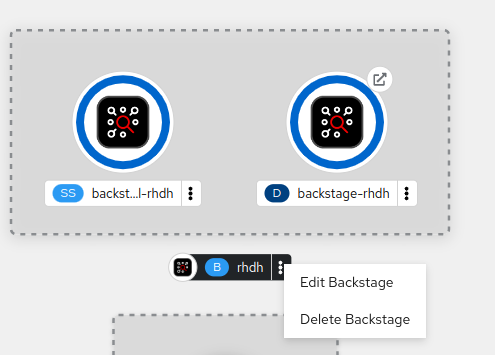Figure 12. Edit BackstageAdd a new attribute named dynamicPluginsConfigMapName under spec.application as follows and reference the new ConfigMap for the dynamic plugin configuration.
... spec: application: appConfig: configMaps: - name: app-config-rhdh mountPath: /opt/app-root/src dynamicPluginsConfigMapName: dynamic-plugins-rhdh-local extraEnvs: secrets: - name: rhdh-secrets ...Click
Savewhen done. -
Restart the RHDH pod by selecting the
Restart rolloutoption in theTopologyview.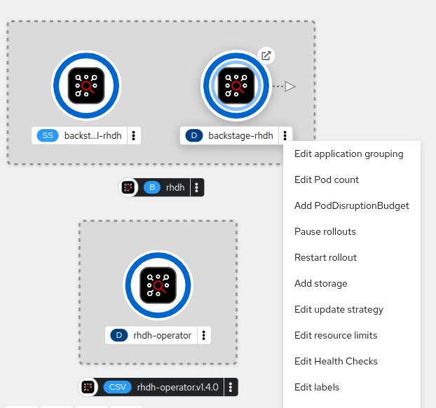Figure 13. Restart rolloutWait for a few minutes and verify that the pod is restarted without any errors. If there are errors, check the pod logs for missing attributes in the YAML files, or wrong indentation.
Verify User Sign In
-
. Click the
Open URLlink to access Red Hat Developer Hub.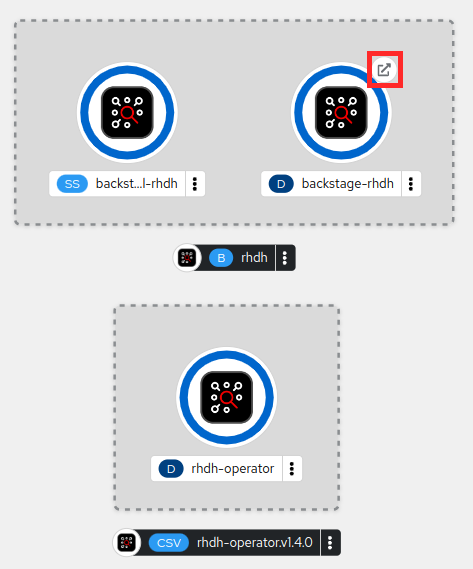Figure 14. RHDH Open URL -
Sign in using
GitHubsign-in method in the RHDH home page. You will be re-directed to a GitHub prompt asking you to sign in using your GitHub credentials. Once you are signed in, you will be asked to allow access to your GitHub profile data.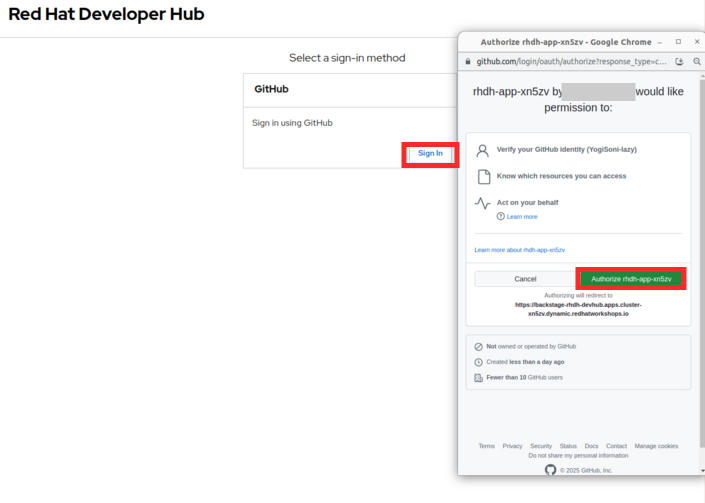Figure 15. GitHub Allow Access Prompt -
After you are signed in, navigate to the
Settingspage. Notice that GitHub has authenticated the user and provided identity information to RHDH.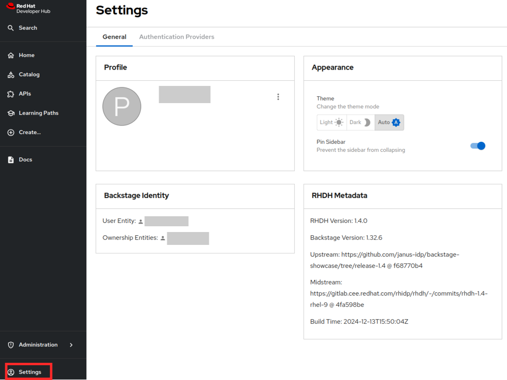Figure 16. GitHub Identity in Settings Page -
Click on the logged in
User Entityin theSettingspage to view the detail imported from GitHub.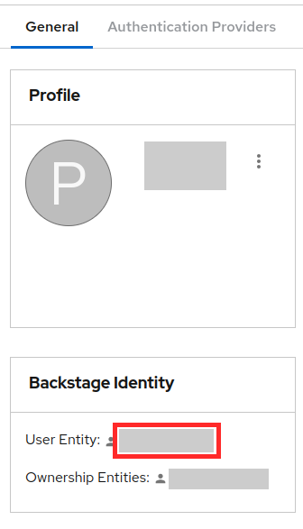Figure 17. User EntityNotice that the plugin has fetched the details of the logged in user from GitHub.
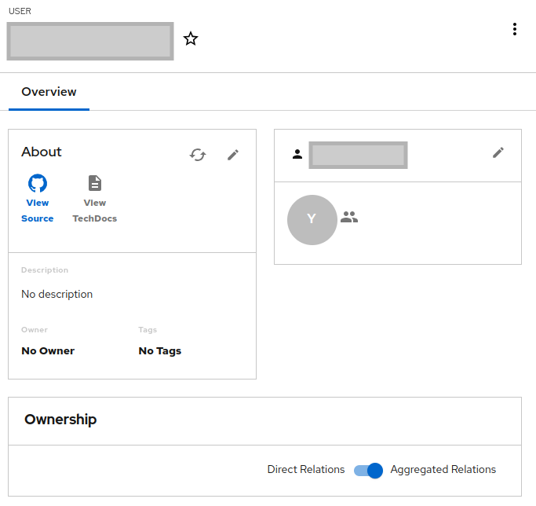Figure 18. View Profile Data -
Click on the RHDH
Catalogin the sidebar. Select theKinddrop-down, and note that two new entities calledUserandGroupare now visible. You may have to wait for a few minutes while the data is fetched from GitHub. -
Select
Groupin theKinddrop-down to view the teams (mapped into RHDH Groups) imported from the GitHub organization. If you have not created teams in GitHub, then do so now before proceeding. You may have to wait for a few minutes while the data is fetched from GitHub.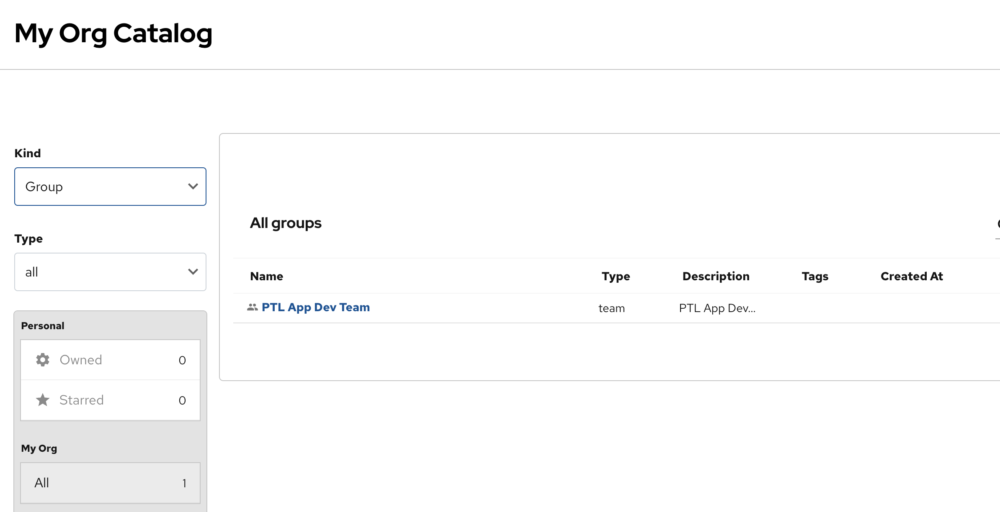Figure 19. View Groups (Teams) from GitHub -
Select
Userin theKinddrop-down to view the users imported from the GitHub organization. If you have not invited users to your organization in GitHub, then do so now before proceeding. You may have to wait for a few minutes while the data is fetched from GitHub.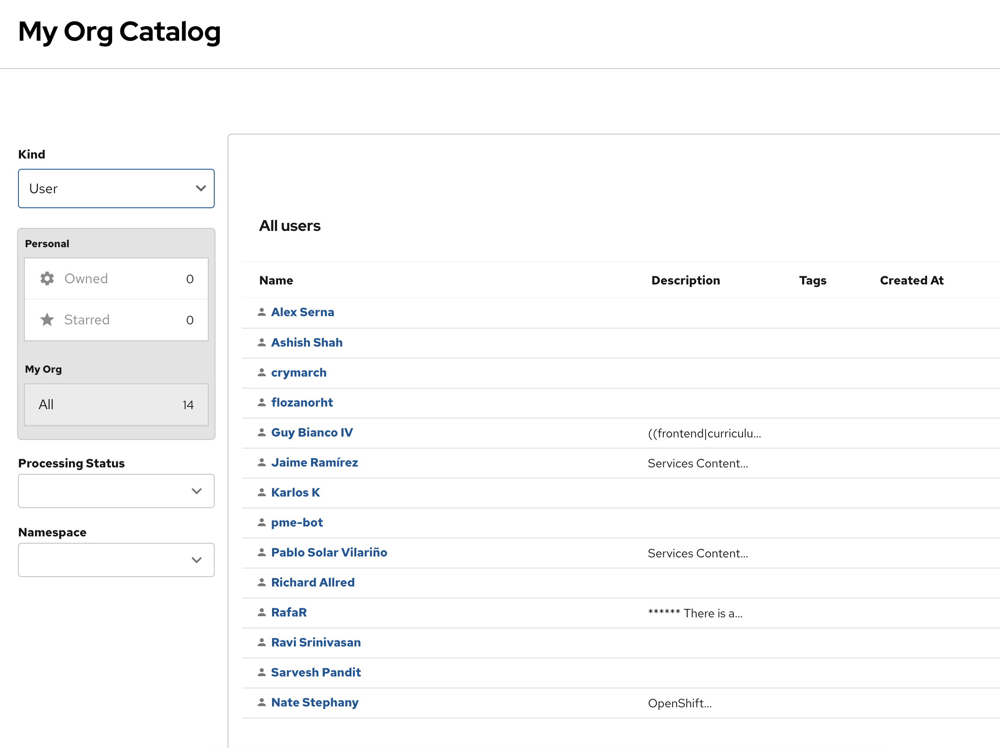Figure 20. View Users Imported from GitHub
At the end of this section, you app-config-rhdh ConfigMap should look like the following:
kind: ConfigMap
apiVersion: v1
metadata:
name: app-config-rhdh
namespace: devhub
...
data:
app-config-rhdh.yaml: |
app:
title: Red Hat Developer Hub
baseUrl: https://backstage-rhdh-devhub.apps.cluster-xn5zv.dynamic.redhatworkshops.io
backend:
auth:
keys:
- secret: "${BACKEND_SECRET}"
baseUrl: https://backstage-rhdh-devhub.apps.cluster-xn5zv.dynamic.redhatworkshops.io
cors:
origin: https://backstage-rhdh-devhub.apps.cluster-xn5zv.dynamic.redhatworkshops.io
auth:
environment: production
providers:
github:
production:
clientId: ${GITHUB_APP_CLIENT_ID}
clientSecret: ${GITHUB_APP_CLIENT_SECRET}
integrations:
github:
- host: github.com
apps:
- appId: ${GITHUB_APP_ID}
clientId: ${GITHUB_APP_CLIENT_ID}
clientSecret: ${GITHUB_APP_CLIENT_SECRET}
webhookUrl: ${GITHUB_APP_WEBHOOK_URL}
webhookSecret: ${GITHUB_APP_WEBHOOK_SECRET}
privateKey: |
${GITHUB_APP_PRIVATE_KEY_FILE}
signInPage: github
catalog:
providers:
github:
providerId:
organization: "${GITHUB_ORGANIZATION}"
schedule:
frequency:
minutes: 60
initialDelay:
seconds: 15
timeout:
minutes: 15
githubOrg:
githubUrl: "${GITHUB_URL}"
orgs: [ "${GITHUB_ORGANIZATION}" ]
schedule:
frequency:
minutes: 60
initialDelay:
seconds: 15
timeout:
minutes: 15